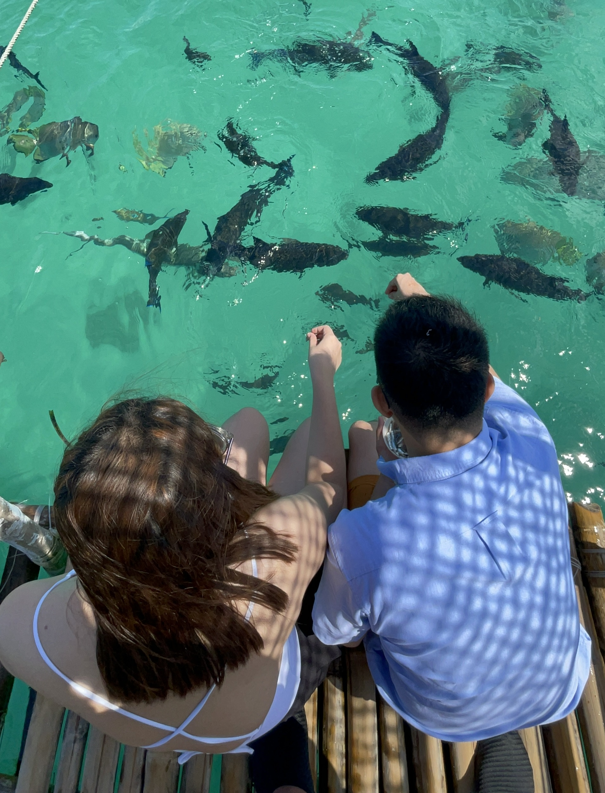

The Serene Subic Beach of Sorsoganons
June 8, 2023When Pinoys hear the word Subic, we immediately think of Zambales. But not known to many (myself included, before me and my friends planned this trip), there is another Subic hidden in an island of a little town at the corner of Sorsogon province — Matnog.

Since it hasn't gained enough popularity, if you visit this beach now, you can definitely feel the tranquil ambiance of the place, untouched by social media exposure and its destructive potential to any travel destination it opens up to the world. For that, I think this could even top off the more famous one in Zambales. (Not that it's a competition.)
Okay, let's get one thing out of the way before we continue. Just a quick differentiation, the Subic in Zambales is a town, while the Subic of Matnog is the name of the beach located in the Calintaan Islands.
If you are like me, who loves being in nature listening to the humming of birds and crashing of waves rather than walking around crowded cities filled with buzzing noises of cars and busy people, I'm pretty sure you are gonna love it here.
We kicked off our 5-day trip basking in Subic's serenity. The quiet shorelines, the calm little waves hitting its fine sand giving them an almost pink color, the vast gradient of blue to turquoise waters complimenting the clear skies, all of these added up to the island's stunning beauty. I've been to a few beaches in the country but this one quickly became a personal favorite for me. It had the calmest waves in all the waters I have ever been on. Not the kind where you can't even sit along the shore without being knocked down by the waves. (Unless of course, if you're looking for a sweet surfing spot, then this might not be for you.)
Our kind boatmen / tour guides also brought us to Juag Lagoon, (part of Calintaan Islands, as well) where we fed different kinds of fish. There were bangus, some colorful maya-mayas, lapu-lapus, mamengs, surahans, and even big pompanos.
Next, my friends and I were taken by our guides inside the Calintaan Cave where we left our marks by creating our own zen stones.
Lastly, before the end of our short island hopping, we went into what is called “Subic Liit”, which from the word itself, is basically a smaller version of Subic situated on the other side of its larger, more famous variant. This one is considered less accessible in terms of amenities. Due to its size, Subic Liit doesn't have any tindahan (stores) where you can buy food or any other emergency supplies you might need on short notice and it only had a few accommodations, making it less ideal for tourists looking to stay in for a night in the island, let alone for a few days.
Next Story